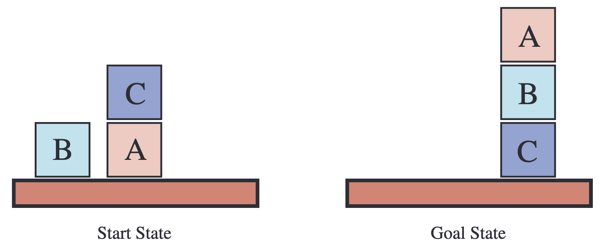

CS 463G & CS 663
(Intro to) AI
Lecture 18: Planning
Fall 2026
Planning asks an agent to reason before acting: which sequence of actions will transform the current world into a goal world?
Planning is reasoning about a sequence of actions that achieves a goal.
Planning uses a restricted logic-like language so search can exploit structure.
| Component | Planning view |
|---|---|
| State | A conjunction of function-free predicate literals |
| Action | Preconditions plus effects |
| Goal | A conjunction of facts that must hold |
| Quantifiers | Avoided in the action/state language |
The restriction is a feature: it makes action applicability and goal checking mechanical.
\text{At}(\text{Robot},A) \land \text{Connected}(A,B)
\text{Goal}: \text{At}(\text{Robot},B)
\text{Move}(A,B)
Precondition:
\text{At}(\text{Robot},A) \land \text{Connected}(A,B)
Effect:
\neg \text{At}(\text{Robot},A) \land \text{At}(\text{Robot},B)
Blocks world is a small planning domain:
Small domain, large search space. That is exactly why it is useful for planning.

| Symbol | Meaning |
|---|---|
| \text{Table} | The table constant |
| \text{block}(A) | A is a block |
| \text{on}(A,B) | A is on B |
| \text{on}(A,\text{Table}) | A is on the table |
| \text{clear}(A) | Nothing is stacked on A |
Planning will use these facts directly; facts not listed as true are treated as false.
The initial state is a set of true facts:
\text{block}(A) \land \text{block}(B) \land \text{block}(C)
\text{on}(B,\text{Table}) \land \text{on}(C,A) \land \text{on}(A,\text{Table})
Closed world assumption: if \text{on}(B,A) is not stated, the planner treats it as false.
The goal is usually partial.
\text{on}(A,B) \land \text{on}(B,C)
Many complete final states can satisfy one partial goal.
The natural action template is:
But “no block is on …” sounds like a quantifier. The planning language is supposed to avoid quantifiers.
Instead of writing:
\neg \exists x\; \text{on}(x,b)
we introduce a predicate:
\text{clear}(b)
“No object is on b.”
This is quantified.
“b is clear.”
This is a simple fact.
The table is a special destination: it can hold multiple blocks.
Separating table moves keeps the action schema faithful to the domain.
Action templates contain variables. A plan uses ground actions.
\text{moveToTable}(b,\text{from})
\text{moveToTable}(C,A)
\text{block}(C) \land \text{on}(C,A) \land \text{clear}(C)
\text{on}(C,\text{Table}) \land \neg \text{on}(C,A) \land \text{clear}(A)
Goal:
\text{on}(A,B) \land \text{on}(B,C)
Each action must be applicable when it is executed; the sequence matters.
Suppose there are 6 objects: blocks plus table.
| Template | Parameters | Ground instances |
|---|---|---|
| \text{move}(\text{block}, \text{from}, \text{to}) | 3 | 6^3 = 216 |
| \text{moveToTable}(\text{block}, \text{from}) | 2 | 6^2 = 36 |
| Total | 252 |
Many of these ground actions may be illegal in a state, but the planner still has to reason about a large candidate space.
Planning is difficult in general.
The next question is how to search this space intelligently.